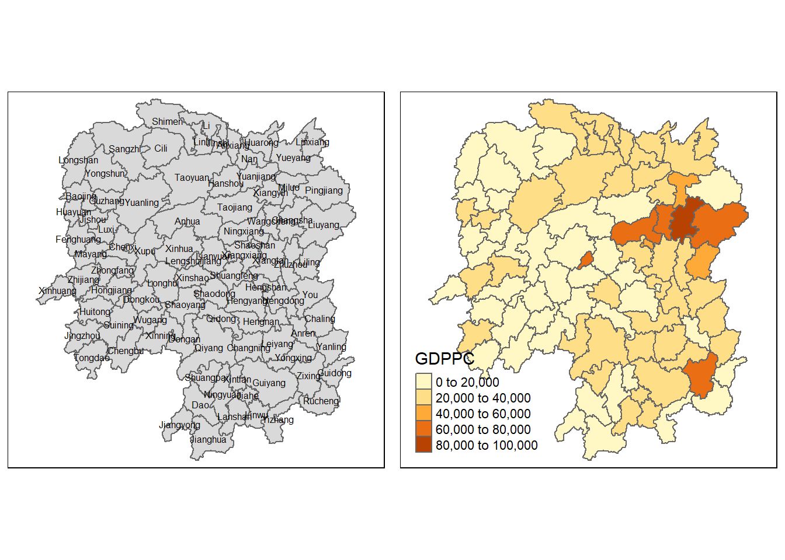

pacman::p_load(sf, sfdep, tmap, tidyverse, knitr, plotly)In-class_Ex2
Getting started
Installing and Loading the R Packages
Four R packages will be used for this in-class exercise, theu are sf, sfdep, tmap, tidyverse.
- knitr is to generate HTML table
- tidyverse consists of many different packages
The Data
For the purpose of this in-class exercise, the Hunan data sets will be used. Theree are two data sets in this use case, they are:
- Hunan, a geospatial data set in ESRI sharefile format, and
- Hunan_2012, an attribute data set in csv format
Importing geospatial data
hunan = st_read(dsn = "data/geospatial",
layer = "Hunan")Reading layer `Hunan' from data source
`C:\chiays\ISS624\In-class_Ex\In-class_Ex2\data\geospatial'
using driver `ESRI Shapefile'
Simple feature collection with 88 features and 7 fields
Geometry type: POLYGON
Dimension: XY
Bounding box: xmin: 108.7831 ymin: 24.6342 xmax: 114.2544 ymax: 30.12812
Geodetic CRS: WGS 84Importing attribute table
hunan_2012 <- read_csv("data/aspatial/Hunan_2012.csv")Rows: 88 Columns: 29
── Column specification ────────────────────────────────────────────────────────
Delimiter: ","
chr (2): County, City
dbl (27): avg_wage, deposite, FAI, Gov_Rev, Gov_Exp, GDP, GDPPC, GIO, Loan, ...
ℹ Use `spec()` to retrieve the full column specification for this data.
ℹ Specify the column types or set `show_col_types = FALSE` to quiet this message.Combining both dataframe by using left join
:::
Show the code
hunan_GDPPC <- left_join(hunan, hunan_2012) %>%
select(1:4,7,15)Joining with `by = join_by(County)`- left_join keeps all observations in x
- right_join keeps all observation in y
- inner_join only keeps observations from x that have a matching key in y
::: callout-important In order to retain the geospatial properties, the left dataframe must be the sf data.frame (i.e. hunan)
Plotting a choropleth map
Now, we are going to prepare a basemap and a choropleth map showing the distribution of GDPPC 2012 by using qtm() of tmap package.
basemap <- tm_shape(hunan_GDPPC) +
tm_polygons() +
tm_text("NAME_3", size=0.5)gdppc <- qtm(hunan_GDPPC, "GDPPC")
tmap_arrange(basemap, gdppc, asp=1, ncol=2)
Deriving contiguity Spatial Weights
Now, you are ready to compute the contiguity weights by using st_weights() of sfdep package.
Deriving contiguity weights Queen’s method
Deriving contiguity weights: Queen’s method
In the code chunk below, queen method is used to derive the contiguity weights.
wm_q <- hunan_GDPPC %>%
mutate(nb = st_contiguity(geometry),
wt = st_weights(nb,
style = "W"),
.before = 1)Notice that st_weights() provide tree arguments, they are:
- nb: A neighbor list objectas created by st_neighbors()/
- style: Default “W” for row standardized weights. This value can also be “B”, “C”, “U”, “minmax”, and “S”. B is the basic binary coding, W is row standadised (sums over all links to n), C is globally standardised (sums over all links to n). U is equal to C divided by the number of neighbours (sum over)
Distance-based Weights
Computing local Moran’s I
In this section, you will learn how to compute Local Moran’s I of GDPPC at county level by using local_moran() of sfdep package.
lisa <- wm_q %>%
mutate(local_moran = local_moran(
GDPPC, nb, wt, nsim = 99),
.before = 1) %>%
unnest(local_moran)The output of local_moran() is a sf data.frame containing the column ii, eii, vari_ii, z_ii, p_ii, p_ii_sim, and p_folded_sim. - ii: local moran statistic - eii: expectation of local moran statistic, for localmoran_permthe permutation sample means - var_ii: variance of local moran statistic for localmoran_permthe permutation sample standard